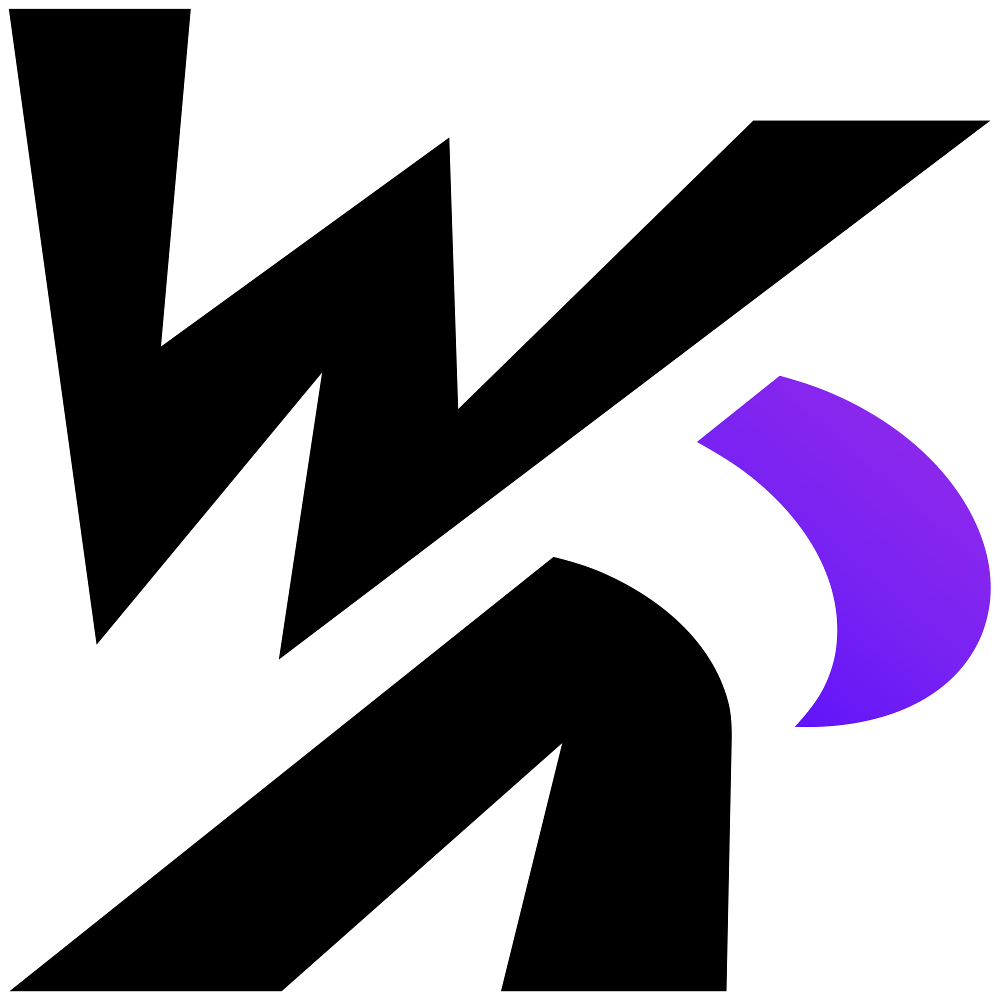

Beckman Studios LLC
A small independent studio in Redfield, Arkansas. We make apps and creative projects, and WriteRiff is the first.


Our first app
WriteRiff
A writing companion for fiction authors, built to help you get the story out of your head and onto the page.
In developmentContact
For questions about Beckman Studios or WriteRiff, email scottmbeckman@yahoo.com.